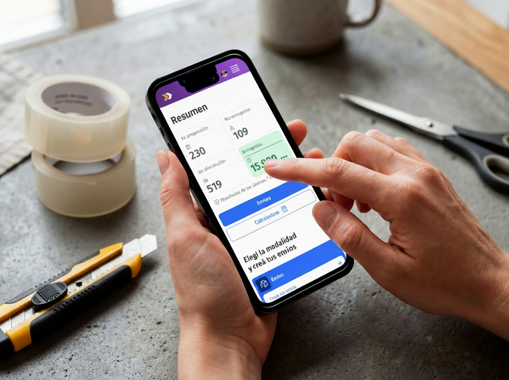
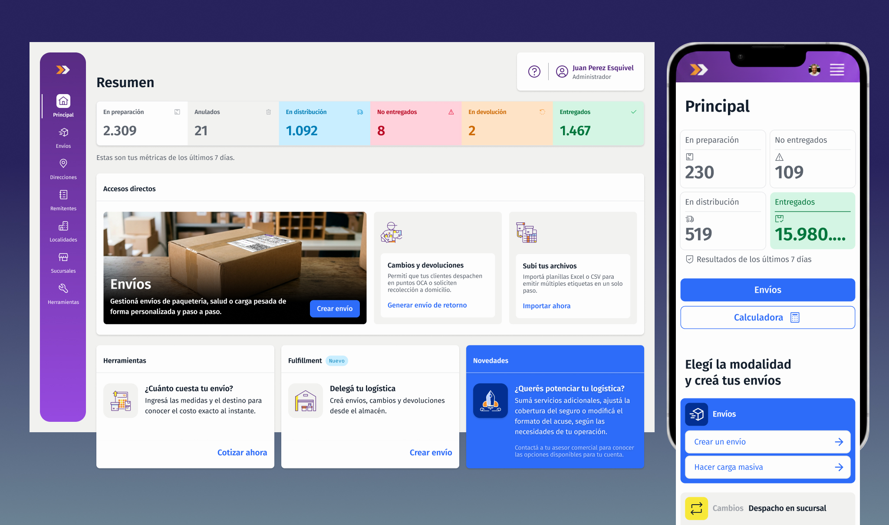
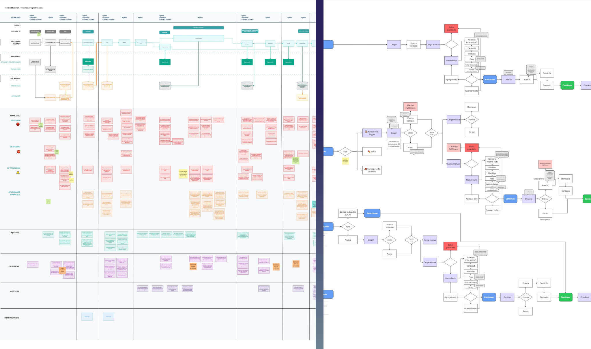
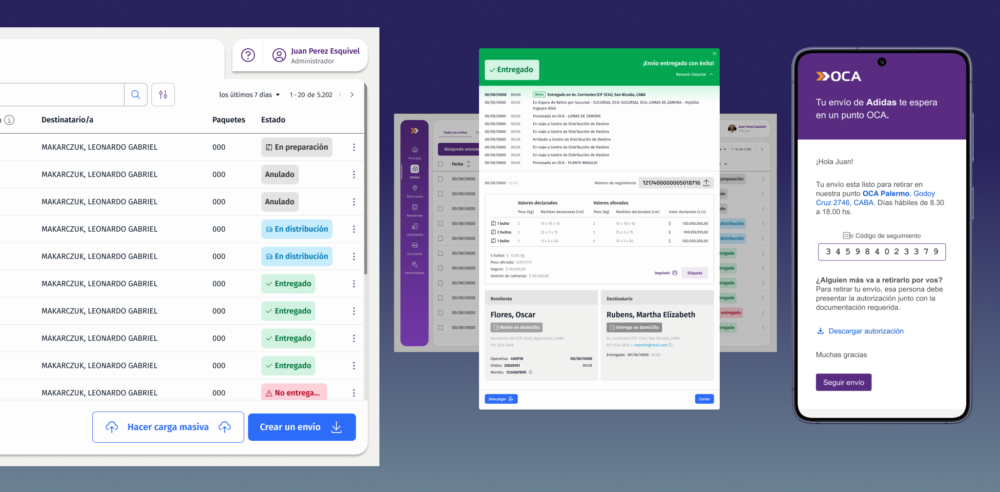
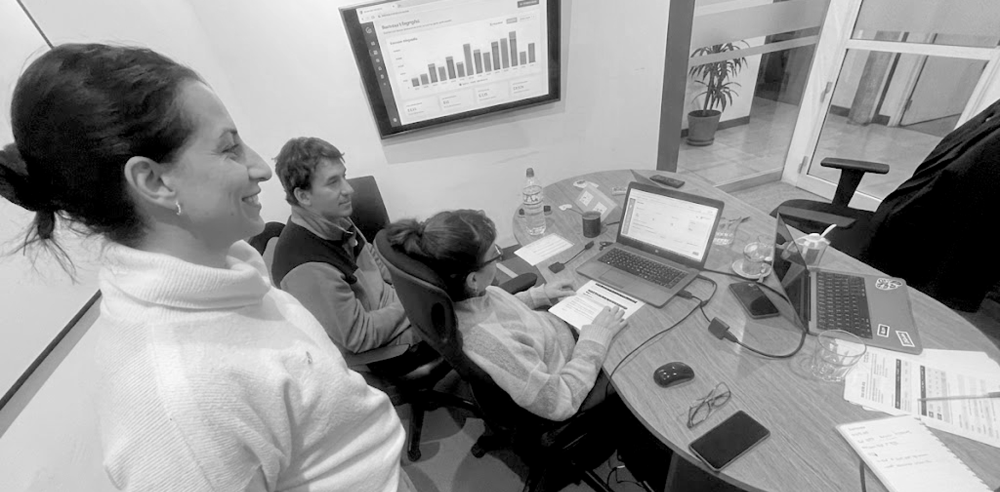

ePak es la plataforma que utilizan los clientes corporativos de OCA para gestionar sus envíos. Durante más de 30 años, el producto creció de forma incremental a partir de necesidades puntuales del negocio, sin una estrategia de producto unificada.
El resultado fue una plataforma crítica para la operación, pero compleja, inconsistente y difícil de escalar.

ePak es la plataforma de envíos que utilizan los clientes corporativos de OCA. Después de más de 30 años de deuda técnica acumulada, el producto había perdido consistencia: funcionalidades duplicadas, flujos confusos y un manual de más de 70 páginas para completar tareas cotidianas. Las consultas al equipo de Customer Experience eran constantes y la plataforma ya no acompañaba el crecimiento del negocio.
A pesar de eso, seguía siendo una pieza crítica para la operación. Más de 5.000 clientes corporativos la utilizan todos los días para crear alrededor de 1 millón de envíos por mes.
ePak era una plataforma central para la operación de OCA, pero su evolución histórica generó fricción en el uso y limitaciones estructurales:
No era una herramienta intuitiva. Usarla bien dependía de conocimiento previo transmitido de persona a persona.
La documentación no era un complemento — era un requisito para poder operar sin cometer errores.
Una misma tarea podía requerir saltar entre distintos sistemas para completarse.
El estado real de la operación no siempre era visible ni confiable desde la plataforma.
Cada nueva funcionalidad sobre la base existente implicaba, cada vez, más parches sobre parches.
El desafío no era mejorar una interfaz, sino construir una base que permitiera evolucionar el producto de forma sostenible.
Incorporamos una forma de trabajo que hasta ese momento no existía en el desarrollo de productos digitales de OCA. Entrevistamos clientes corporativos, trabajamos junto al equipo comercial para acceder a usuarios, involucramos a Customer Experience, Ingeniería Operativa y Sistemas, construimos blueprints y analizamos la operación de punta a punta.
Este enfoque permitió dejar de priorizar iniciativas basadas únicamente en requerimientos puntuales y comenzar a tomar decisiones respaldadas por investigación, evidencia y necesidades reales del negocio.
Definí la estrategia de diseño del producto, coordiné al equipo y acompañé la evolución de ePak, asegurando la coherencia de las decisiones mientras la plataforma incorporaba nuevas capacidades y se preparaba para crecer junto con el ecosistema digital de OCA.

Tomé la decisión de no proponer soluciones hasta tener una imagen completa del ecosistema: qué hacía la plataforma actual, cómo la usaban realmente los clientes, qué pedían al equipo comercial, y cómo lo que cargaban en ePak impactaba después en la operación.
Mapeo completo de la arquitectura actual: qué funcionalidades existían, cuáles se usaban realmente, cuáles generaban confusión o se duplicaban. El punto de partida fue entender qué conservar, qué eliminar y qué mejorar — antes de proponer nada nuevo.
Mapeo de la interacción entre clientes, operación, sistemas y CX para construir una visión compartida de todo el ecosistema. El blueprint fue la primera vez que todos los equipos vieron el recorrido completo — de punta a punta.
Sesiones con Comercial, Sistemas, Operaciones y CX para entender restricciones, dependencias y objetivos de negocio. Cada área tenía una visión parcial del problema.
Comprensión de necesidades reales: qué tareas hacían todos los días, qué les fallaba, qué le pedían al equipo comercial que la plataforma no les daba. El relevamiento de incidencias y consultas frecuentes fue el mapa de los puntos de dolor reales — no supuestos.
Documentación de puntos de contacto, emails transaccionales y estados de envío. Los problemas de experiencia no estaban solo en las pantallas: también vivían en las comunicaciones que los clientes recibían después de operar.
Uso de Claude para síntesis de entrevistas, análisis de hallazgos y documentación — incorporando IA como herramienta real de trabajo en el equipo.
El primer objetivo no fue diseñar una nueva plataforma. Fue entender por qué existía la actual.

El objetivo nunca fue hacer una plataforma más linda. Fue hacer una plataforma que resolviera los problemas diarios de las personas que trabajan con ella — y que dejara de necesitar un manual de 70 páginas para poder usarse.
Trabajamos sobre los recorridos críticos: la creación de envíos, el seguimiento, el historial y la prueba de entrega. Cada decisión fue validada antes de entrar en desarrollo.
El alta de envíos era un formulario largo con muchos campos y varios puntos de error. Lo convertimos en un flujo guiado por pasos — más fácil de completar, más fácil de corregir, con mejor calidad de datos ingresados.
Un hallazgo que cambió el foco del proyecto: lo que el cliente carga en ePak — pesos, medidas, embalaje, información de destino, valor declarado — impacta directamente en la operación y en la experiencia de entrega. Mejorar la calidad de esos datos no era solo UX: era reducir errores operativos en toda la cadena.
Los clientes llamaban a CX para pedirla. Los distribuidores la registraban en su propia app (Driving). Conectar esa información y mostrarla directamente en el detalle del envío eliminó uno de los motivos de contacto más frecuentes — y le devolvió autonomía al cliente.
Los clientes necesitaban compartir el estado de sus envíos con sus propios clientes. Descarga de listados, estados en tiempo real, información exportable — la plataforma pasó de ser un panel interno a ser una herramienta que los clientes usaban frente a su propia operación.
Los usuarios no necesitaban aprender cómo funcionaba OCA. Necesitaban entender qué estaba pasando con sus envíos.

ePak dejó de ser una herramienta enfocada únicamente en la creación de envíos para convertirse en una plataforma desde la que los clientes gestionan su operación diaria.
Centralizamos funcionalidades que antes requerían distintas herramientas, simplificando la experiencia y reduciendo la fragmentación de los flujos de trabajo.
Rediseñamos la forma en que los clientes acceden a la información de sus envíos, mejorando la comprensión de la operación y su autonomía.
Diseñamos una arquitectura flexible para incorporar nuevos módulos, servicios y productos sin volver a reproducir las limitaciones del pasado.
El design system construido en paralelo — Ñandú — fue la infraestructura que hizo posible escalar la consistencia entre ePak y los demás productos de OCA.
Ver caso Ñandú →
Más allá de la mejora de la interfaz, ePak instaló en OCA una forma de trabajar: con investigación, con validación temprana y con una visión de producto que no existía antes.
30% menos de consultas a Customer Experience relacionadas con el uso de la plataforma (−50% en consultas de seguimiento, −30% en consultas de prueba de entrega).
Eliminación del manual operativo como requisito de capacitación.
Incorporación de analítica de producto para respaldar nuevas decisiones.
Plataforma preparada para incorporar nuevos productos y servicios.
Nueva metodología de trabajo basada en discovery, investigación y validación continua.
La visión fue construir una plataforma preparada para evolucionar junto con el negocio: un único punto de acceso desde el que los clientes pudieran gestionar los servicios de OCA, sin depender de múltiples sistemas.
Esa base permitió incorporar iniciativas como Fulfillment y ME1, preparar la plataforma para futuras verticales de negocio e impulsar el Design System Ñandú, que presento como casos independientes en este portfolio.